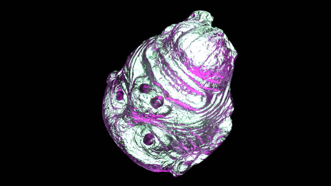
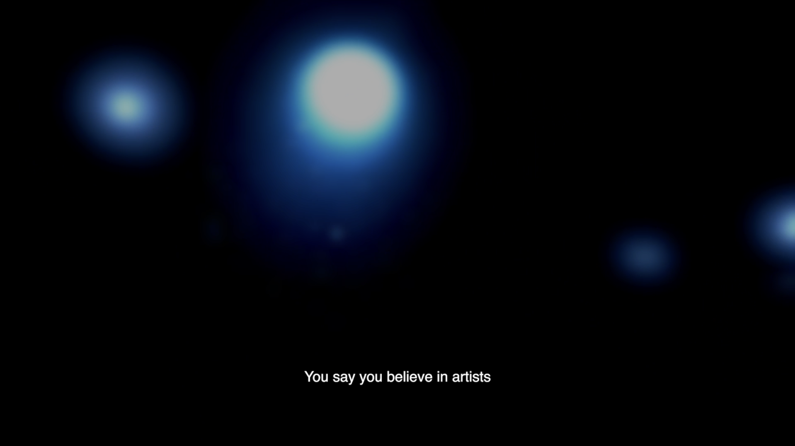
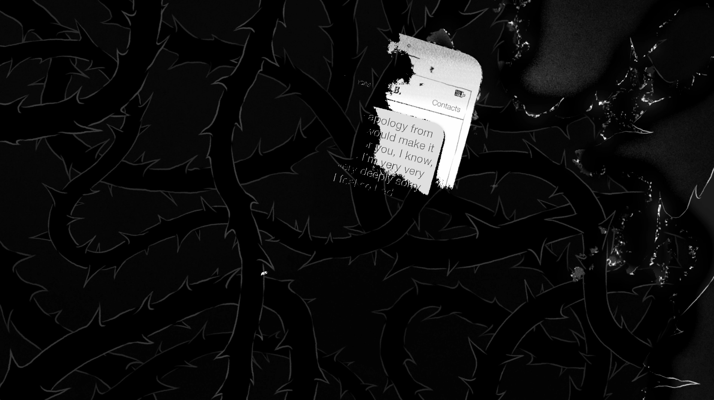

FILM SCORES
WHERE CAN WE BE FOUND? (2023) original score, electronic, musique concrète/ 45-min art documentary dir. by EcoRove, premiered at the New Museum, NYC.
SUNSET SEDUCTION (2024) original score, electronic, drone. 45-min experimental film and contract dir. by Charles de Augustin, US premiere at Millenium Film Workshop, CA premiere at XINEMA, UK premiere TBA.
A GRIEVING HEART (2025) original score, live instrumentation. 12-min animated short dir. by Wendy Cong Zhao, premiered via Woodstock Film Festival.